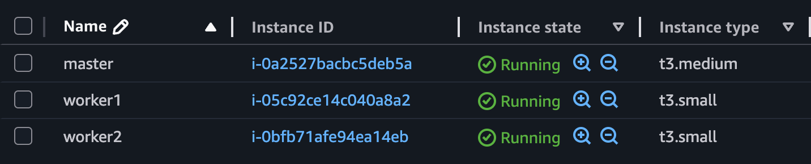
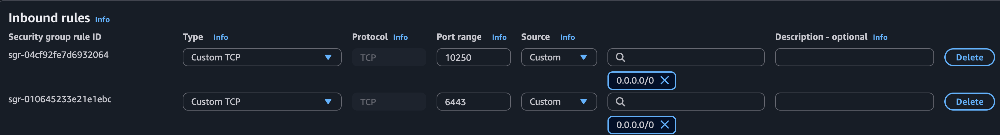
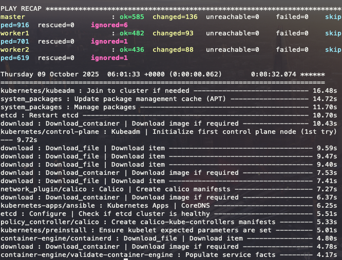

Thu, Oct 9, 2025
If you're a frontend engineer, you should learn Kubernetes. As your applications grow, they need to be separated and deployed independently. Eventually, this leads to adopting a micro-frontend architecture, which fits perfectly with Kubernetes.
I’ve been trying to create a Kubernetes cluster using Vagrant and VirtualBox on my local machine for the past few days. However, it was quite difficult to run the cluster locally due to limited RAM.
So I've decided to create the cluster using EC2 instances, with Kubespray controller running locally.
First, let's create a master node and worker nodes.

You should create the master node using an EC2 instance of t3.medium or higher. For the worker nodes, it's recommnded to use at least t3.small instances.
Master Node - CPU: 2, RAM: 4 | Wokerer Node - CPU: 2, RAM: 2

You need to open ports 6443 and 10250 in your EC2 security group.
6443is used by the Kubernetes API server on the master node.10250 is used by Kubelet on each node, allowing the master to communicate with the workers.These ports must be open so that the Kubespray playbook can successfully set up the cluster.
$ mkdir kubespray
$ cd kubespray
$ git clone https://github.com/kubernetes-sigs/kubespray .
# Ensure you have installed Docker then
$ docker run --rm -it --name kubespray --mount type=bind,source="$(pwd)"/inventory/sample,dst=/inventory \
--mount type=bind,source="${HOME}"/.ssh/id_rsa,dst=/root/.ssh/id_rsa \
quay.io/kubespray/kubespray:v2.28.0 bashYou should create an ssh key on your local machine before running the Kubespray conainer.
# Inside the container
root@bbaa7247daad:/kubespray# vi /inventory/inventory.inimaster ansible_host=<Pulbic IP> ip=<Private IP> etcd_member_name=etcd1 ansible_user=ubuntu
[etcd:children]
kube_control_plane
[kube_node]
worker1 ansible_host=<Pulbic IP> ip=<Private IP> ansible_user=ubuntu
worker2 ansible_host=<Pulbic IP> ip=<Private IP> ansible_user=ubuntu You should modify the inventory.ini file as shown above.
# Copy the local public key
$ cat ~/.ssh/id_rsa.pub
$ ssh -i "your-key-pair.pem" ubuntu@<master-public-ip>
ubuntu@<master-public-ip>:~$ echo "Paste your public key" >> ~/.ssh/authorized_keysYou should add public key to each instance to authorize ssh access. Please do the same on the worker nodes.
# Inside the container
root@bbaa7247daad:/kubespray# ansible-playbook -i /inventory/inventory.ini --private-key /root/.ssh/id_rsa --become cluster.yml
If the playbook finishes without any errors, as shown above, your Kubernetes cluster has been successfully set up.
$ ssh -i "your-key-pair.pem" ubuntu@<master-public-ip>
ubuntu@<master-public-ip>:~$ sudo kubectl version
Client Version: v1.32.5
Kustomize Version: v5.5.0
Server Version: v1.32.5
ubuntu@<master-public-ip>:~$ sudo kubectl get nodes
NAME STATUS ROLES AGE VERSION
master Ready control-plane 12m v1.32.5
worker1 Ready <none> 11m v1.32.5
worker2 Ready <none> 11m v1.32.5Boom! Success.
ubuntu@<master-public-ip>:~$ mkdir -p $HOME/.kube
ubuntu@<master-public-ip>:~$ sudo cp -i /etc/kubernetes/admin.conf $HOME/.kube/config
ubuntu@<master-public-ip>:~$ sudo chown $(id -u):$(id -g) $HOME/.kube/configIf you want to use kubectl without sudo, follow the steps above.
ubuntu@<master-public-ip>:~$ kubectl get pod -n kube-system
NAME READY STATUS RESTARTS AGE
calico-kube-controllers-588d6df6c9-g5wx8 1/1 Running 0 13m
calico-node-2vrhd 1/1 Running 0 14m
calico-node-l5bsl 1/1 Running 0 14m
calico-node-pw95t 1/1 Running 0 14m
coredns-5c54f84c97-8dr66 1/1 Running 0 13m
coredns-5c54f84c97-spr5f 1/1 Running 0 13m
dns-autoscaler-56cb45595c-prs5h 1/1 Running 0 13m
kube-apiserver-master 1/1 Running 0 15m
kube-controller-manager-master 1/1 Running 1 15m
kube-proxy-2cpzg 1/1 Running 0 14m
kube-proxy-bzpqx 1/1 Running 0 14m
kube-proxy-h5zl7 1/1 Running 0 14m
kube-scheduler-master 1/1 Running 1 15m
nginx-proxy-worker1 1/1 Running 0 14m
nginx-proxy-worker2 1/1 Running 0 14m
nodelocaldns-g8kqw 1/1 Running 0 13m
nodelocaldns-gwlfx 1/1 Running 0 13m
nodelocaldns-j4jdm 1/1 Running 0 13mubuntu@<master-public-ip>:~$ kubectl run apache --image httpd
ubuntu@<master-public-ip>:~$ kubectl run nginx --image nginx
ubuntu@<master-public-ip>:~$ kubectl get po -o wide
NAME READY STATUS RESTARTS AGE IP NODE NOMINATED NODE READINESS GATES
apache 1/1 Running 0 111s 10.233.125.2 worker2 <none> <none>
nginx 1/1 Running 0 103s 10.233.105.131 worker1 <none> <none>Creating the cluster was challenging, but I learned a lot about how Kubernetes works and how its components interact. Now, let's practice k8s.